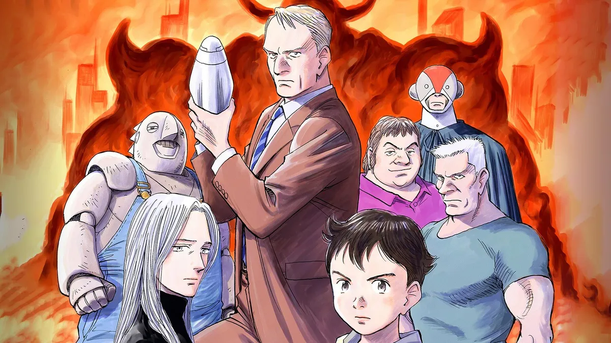
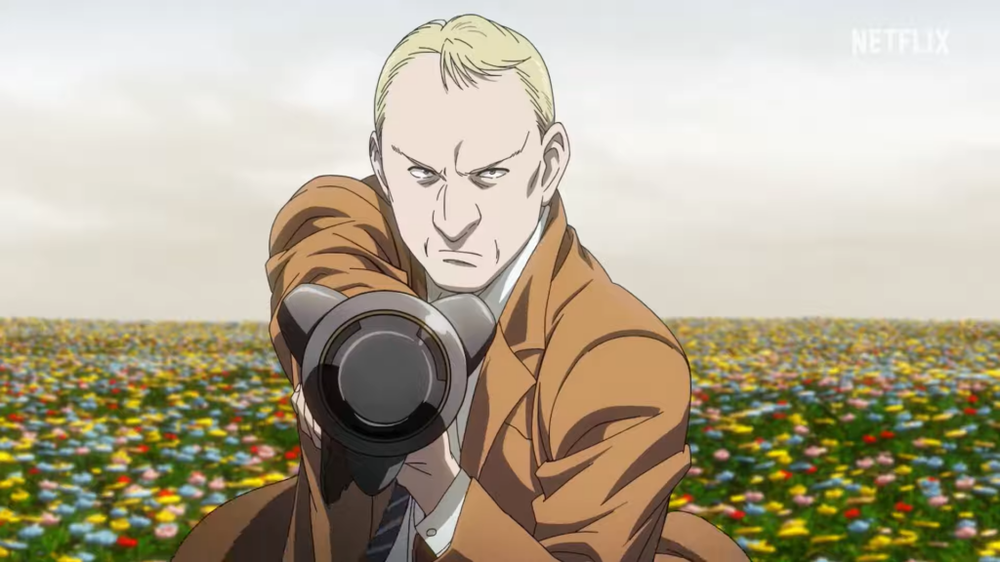
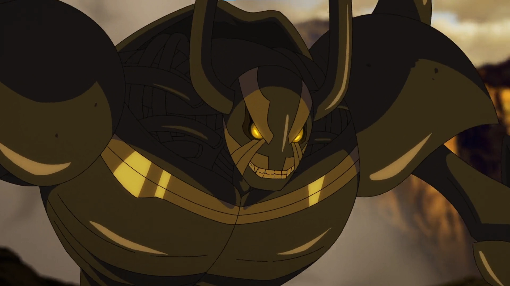

Pluto: Review
What a very complex and philosophical story journey that was.
I adore the complex breakdown between humans and robots mirroring a chaotic… yet hopeful reality from war trauma. Very interesting to see the war perspective of robots, mimicking war PTSD and echoing the consequences of war. I cant help but to notice hints of Astro Boy in the storyline, which I find nostalgic and well thought out.

The ethos of Pluto (end the cycle of hatred) is something I find mirroring in today’s times… shows viewers how hatred can only divide us, with no good end result. I find the narrative taking place in the Middle East is a perfect example of this, as it’s reflective of the current times. But what I love about Pluto is that the series breaks down the relationship between humans and robots. With robots eventually adapting to human emotions as the series.

Eventually the robots learning these human motions as the series progresses. One moment that stood out for me was the wife, learning to grieve by just imitating humans as we all do. It’s like I was watching robots evolve more human-like, and the pacing of the series was everything to me.

For the body horror aspect, it's definetely shown through the horrible mutilation of the robots ranging from war PTSD, serial killings, and bizarre mutations. This is definetely seen with the antagonist Pluto, with his robot form (almost god-like) as his evolved appearance evokes the souls of deceased robots that died during the Central Asia War (part of the main storyline).
Concluding this review, this was probably one of the best series I have watched this year. So much to dive into in such a small blog entry, but I'm currently diving into breakdowns to go further with this theme of body horror art in media.
Love this series a lot, as it has a special place in my heart!!! 🫶🏽


socials